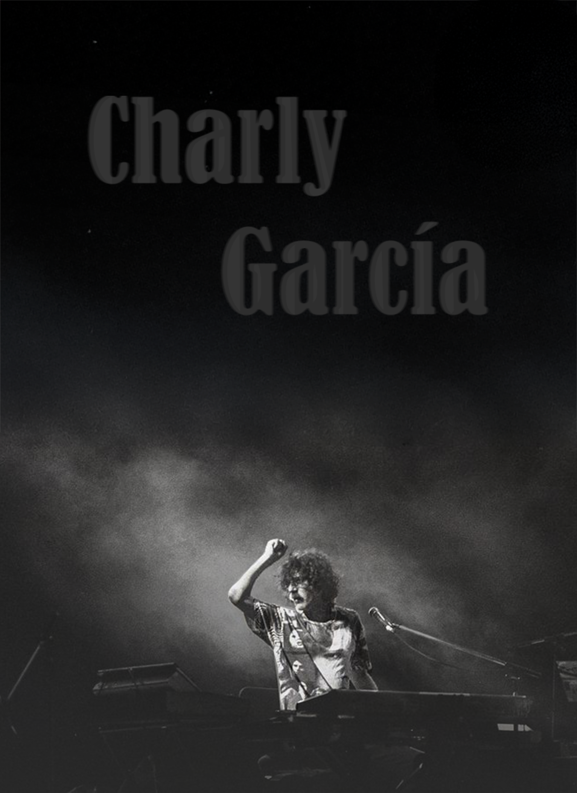
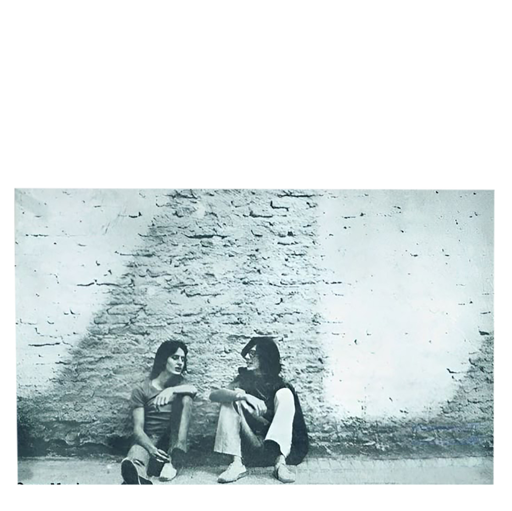

De Sui Generis a Say No More
Medio siglo de revolución sonora. Un recorrido por la carrera de Charly García.
SUI GENERIS

A comienzos de los años setenta, Charly García y Nito Mestre formaron Sui Generis. Sus canciones, simples y honestas, hablaban de amor, tristeza y libertad. Mientras Argentina entraba en tiempos difíciles, ellos cantaban desde un lugar íntimo y esperanzador. Temas como “Canción para mi muerte” o “Rasguña las piedras” se convirtieron en himnos para una generación. Con guitarras, flauta y voz, Sui Generis marcó el inicio del rock nacional con sensibilidad y poesía. Su despedida en el Luna Park fue un símbolo: la juventud argentina perdía la inocencia, pero ganaba una voz.
“Inventamos un mundo sin adultos, donde podíamos llorar cantando.”
Sui Generis fue la infancia del rock nacional. Dulce, vulnerable y profundamente humana. Antes de los bigotes bicolores y los pianos voladores, Charly García fue un adolescente con guitarra criolla, melancolía y ganas de decir lo que nadie decía. A fines de los años sesenta conoció a Nito Mestre en el colegio Dámaso Centeno, en Buenos Aires. Los unió la música y una sensibilidad común: la necesidad de cantar lo que sentían sin filtros.
Sui Generis nació en 1969 como una banda escolar con varios integrantes, pero pronto quedó reducida a un dúo acústico. El nombre —latín para “único en su especie”— se volvió una definición profética. Charly y Nito construyeron un sonido que mezclaba la dulzura del folk con letras introspectivas y críticas disfrazadas de inocencia. Mientras el país se endurecía políticamente, ellos escribían canciones que hablaban de libertad, amor y desencanto juvenil. Su música se convirtió en refugio para una generación que empezaba a despertar.
El debut, “Vida” (1972), fue un golpe de aire fresco. Temas como “Canción para mi muerte” o “Necesito” se volvieron himnos inmediatos. Luego llegó “Confesiones de invierno” (1973), más oscuro y sofisticado, con clásicos como “Rasguña las piedras” o “Cuando ya me empiece a quedar solo”. Con “Pequeñas anécdotas sobre las instituciones” (1974), el dúo intentó un paso más ambicioso y político. Varias letras fueron censuradas o alteradas, pero el mensaje sobrevivió: Charly ya estaba mutando en un compositor con visión social y una ironía afilada.
